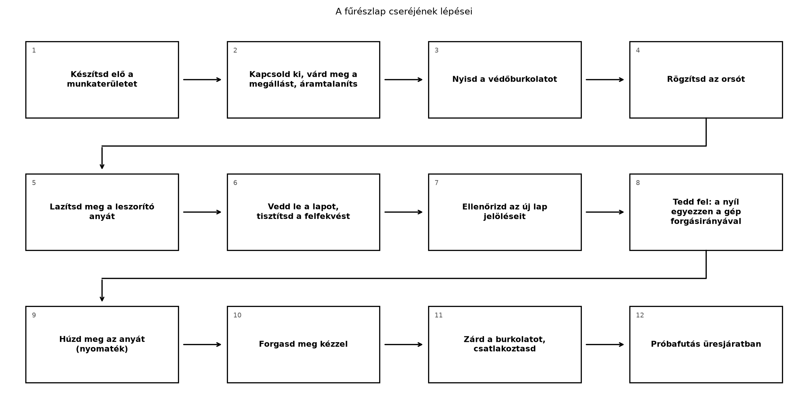

Egy tompa, repedt vagy rosszul tárolt gépi szerszám nemcsak ronda felületet és méretpontatlanságot ad, hanem balesetet is okozhat. Ha egy körfűrészlap megengedett legnagyobb fordulatszámát túlléped, a repedés mentén a szerszám szétrepülhet. Ha egy életlen gyalukést erőltetsz, a gép túlmelegszik, a munkadarab visszavágódhat. Ezért a gépi szerszámok kezelése, ellenőrzése, szállítása és tárolása nem „külön feladat”, hanem a biztonságos és minőségi gépi munka alapfeltétele.
Képzeld el, hogy a tanulóműhelyben egy másik tanuló leveszi a polcról a 300 mm átmérőjű körfűrészlapot, lecsapja az asztal sarkára, majd úgy teszi be a körfűrészgépbe, hogy a forgásirányt meg sem nézi. A lap először rosszul vág, utána elszíneződik a hőtől, végül repedés keletkezik rajta. Ebben az alfejezetben megtanulod, hogyan kerülheted el ezt a láncreakciót.
Nézz meg egy fém körfűrészlapot. A lap testére ütve vagy lézerrel jelölve hasonló adatokat találsz:
A jelöléseket a következő ábra mutatja egy 300 mm átmérőjű, 48 fogú körfűrészlapon. A HTML-változatban a jelölésekre mutatva megjelenik a jelentésük, és egy kis ellenőrző kalkulátor megmondja, felszerelhető-e a lap egy adott fordulatszámú gépre.
Definíció.
A gépi szerszámokon található előtolási mód jelölés azt
mondja meg, hogy a szerszám milyen géphez való:
Szabály.
Kézi előtolású gépbe csak MAN jelölésű szerszámot
szerelj. A MEC vagy a jelöletlen szerszám kézi
előtolású gépen használata tilos, mert a szerszám nem úgy van
kialakítva, hogy a visszavágódást korlátozza. (Ellenőrizendő: a konkrét
szerszámra vonatkozó magyar és európai jelölési szabvány pontos száma és
hatályos változata.)
Szabvány.
A faipari gépi szerszámok biztonsági követelményeit és jelöléseit a
faipari szerszámokra vonatkozó MSZ EN 847 sorozat (például a
körfűrészlapokra és marószerszámokra vonatkozó részei) tárgyalja. A
szerszámra ütött n_max értéket a gyártó a szilárdsági vizsgálat és a
kiegyensúlyozás alapján adja meg. A pontos szabványszámot és a hatályos
jelölési módot a szerszám gyártói dokumentációjából ellenőrizd.
A gépi szerszám teste leggyakrabban szerszámacél, az élei pedig a megmunkálandó anyagtól és a gép típusától függően más-más anyagból készülnek.
Megjegyzés.
A szerszámra jelölt n_max a gyártó által megengedett legnagyobb
fordulatszám; a gép tényleges fordulatszáma ezt nem lépheti túl. Az
értéket a szerszám átmérője, szilárdsága és kiegyensúlyozása szabja meg.
A szerszám kiválasztásakor először a műveletet, az anyagot, majd a gép
fordulatszámát, végül a szerszám n_max értékét ellenőrizd.
A szerszámot minden használat előtt és minden szerszámcsere alkalmával ellenőrizned kell.
Ellenőrzőlista.
1. Nézd meg a szerszámot tiszta, száraz ruhával letörölve, jó
megvilágításban.
2. Homlok- és oldalfelületeken, a furat körül, a vágóélek mögött keress
hajszálrepedést.
3. Nagyítót használj, ha bizonytalan vagy.
4. Fém szerszámot (például marószárat, csapágyazott vezetőgyűrűt)
óvatosan koccints meg: a tiszta, csengő hang ép szerszámra utal, a
tompa, koppanó hang repedést vagy laza szereléket jelezhet.
(Ellenőrizendő: a gyártói hangvizsgálati előírás; a hangpróba önmagában
nem helyettesíti a szabályos vizsgálatot.)
Szabály.
Repedt, törött, megégett vagy deformálódott szerszámot tilos a gépbe
szerelni. Az ilyen szerszámot el kell különíteni, és el kell vinni
szakszervizbe vagy selejtezni.
A kopott vagy tompa szerszám jelei:
Továbbvitt eredmény.
Ezt az ellenőrzést rendszeresen elvégzed a fűrészgépi beállításoknál Asztalos körfűrészgép és a körfűrészlapok, a gyalu
beállításánál Egyengető gyalugép: késtengely,
késcsere, beállítás, biztonság és a marógép szerszámcseréjénél Asztalos marógép (alsómaró): profilmarás, díszlécek,
sablon szerinti marás, az élezésnél pedig Gépápolás, karbantartás és élezés mutatja be a
helyes élezési módot.
A forgó szerszám tömegének eloszlása akkor jó, ha a szerszám futása nyugodt, rezgésmentes. A kiegyensúlyozatlanság jelei:
Megjegyzés.
A szerszám kiegyensúlyozását általában a szerszámgépgyártó vagy a
szerszámélező műhely végzi el kiegyensúlyozó gépen. A műhelyben te a
szerszám tömegét és a felfekvő felület tisztaságát tudod ellenőrizni,
valamint a próbafutással a rezgést.
A leggyakoribb hibaképeket és a teendőt a következő ábra foglalja össze. A HTML-változatban minden képnél eldöntheted, használható-e a szerszám.
A szerszám akkor marad jó állapotban, ha úgy viszed, hogy a vágóél ne ütközhessen, és úgy tárolod, hogy a nedvesség, a korrózió és az egymásnak ütődés ne rongálja.
Recept.
Gépi szerszámok szakszerű tárolása
A szerszámot tokban, élévédővel szállítsd a műhelyen belül is. Ha leejted, akár a kicsinek látszó ütés is repedést okozhat a keményfém élen vagy a testben. A leejtett szerszámot mindig vizsgáld meg újra.
A szerszámcseréhez a következő eszközöket használjuk:
Az eszközöket és a gyalugép késbeállításának elvét a következő ábra mutatja: a mágneses késbeállítót a hátsó asztalra fektetjük, és a kés élét a késtengely tetőpontján a hátsó asztal síkjába állítjuk; a leszorító csavarokat középről kifelé, fokozatosan húzzuk meg.
Gépbiztonság.
A gépi szerszám cseréje előtt mindig áramtalanítsd a gépet. Kapcsold ki
a gépet az üzemi kikapcsolóval, várd meg, amíg a forgó szerszám teljesen
megáll, majd húzd ki a csatlakozót vagy reteszeld le a főkapcsolót (a
vészleállító nem üzemi leállító eszköz). Csak ezt követően nyúlj a
szerszámhoz. Ha a gép rendelkezik szervizkapcsolóval vagy leválasztó
kapcsolóval, azt is használd. A véletlen újraindítás elleni védelmet
(retesz, kikapcsolás, megjelölt kapcsoló) mindig tartsd be.
Vegyünk egy példát: a körfűrészgép fűrészlapjának cseréje.

A kések és szerszámok beállításánál a cél, hogy minden él azonos magasságban, azonos sugáron fusson, és a szerszám tömegeloszlása egyenletes legyen.
Szabály.
A kiegyensúlyozást általában a szerszám élezésekor, a késbetét
cseréjekor vagy a gép rezgésének növekedésekor kell elvégeztetni
szakszervizben. A műhelyben te a kés kiállását gyári beállítósablonnal,
mérőórával vagy a gépkönyv szerinti módon ellenőrzöd. A
tömegkiegyenlítést illetően: kisebb szerszámoknál a gyártó
kiegyensúlyozottan adja a szerszámot; ha bármely elem sérül vagy
kicserélődik, az egyensúly felborulhat.
Ha egy marószerszám csapágya, anyacsavarja vagy alátétje elkopott, ne toldozd meg alátéttel, ne reszeld meg az orsót. A rosszul illeszkedő alkatrész kiegyensúlyozatlanságot okoz, és tönkreteszi a csapágyat.
A szerszámcsere után a következőket ellenőrizd:
Hiba: a fűrészlap vágáskor üt, a vágás
hullámos.
Ok: a lap furata nem illik az orsóra, vagy a felfekvő
felület koszos, esetleg a lap meg van deformálódva.
Helyes gyakorlat: tisztítsd meg a felfekvőket,
ellenőrizd a furatátmérőt, és ha a lap deformált, cseréld ki.
Hiba: a gyalukés nem vág egyenletesen, az anyag
„féloldalasan” dolgozik.
Ok: a kések kiállása nem azonos magasságú, vagy a
késtengely kiegyensúlyozatlan.
Helyes gyakorlat: állítsd be a késeket gyári sablonnal,
mérőórával, és csak azonos, jelölt, azonos hosszúságú késeket szerelj
be.
Hiba: a szerszám beépítés után hangos, rezeg, a
gép melegszik.
Ok: túl nagy fordulatszám, túl tompa szerszám,
kiegyensúlyozatlanság, vagy a szerszám n_max értéke kisebb, mint a
géporsó fordulatszáma.
Helyes gyakorlat: azonnal állj le, és ellenőrizd a
n_max értéket a géporsó fordulatszámához képest, majd vizsgáld meg a
szerszámot.
Hiba: a marószerszám éle letörik, pedig nem
ütközött idegen anyaghoz.
Ok: a szerszámot leejtették, vagy a tárolás során a
keményfém él más fémhez ütődött.
Helyes gyakorlat: a szerszámot mindig élévédőben
tárold, szállítsd, és ha leesett, még használat előtt vizsgáld meg,
szükség esetén élezőbe kell vinni.
Egy asztalostanuló az üzembe kerülve egy állványos fúrógép mellett volt. A fúrószár tompa volt, a munkadarab felforrósodott, a gép pedig füstölt. A tanuló kicserélte a fúrót, de nem húzta meg teljesen a tokmánykulcsot, és a tokmányban maradt a kulcs. A gép bekapcsolásakor a fúró kiesett, a tokmánykulcs pedig kirepült volna, ha a művezető nem állítja le azonnal a gépet.
Tanulságok:
- A tokmánykulcsot mindig vedd ki azonnal a tokmányból, és soha ne hagyd
a gépben.
- A szerszámot mindig a gépkönyv szerint, a megfelelő kulccsal,
megfelelő erővel húzd meg.
- A tompa szerszámot ne erőltesd; a szerszámcsere a munka része, nem
szükséges rosszkedvűen sietni.
1. feladat (A)
Egészítsd ki a mondatot!
Egy körfűrészlap jelölései: D = 250 mm, d = 30 mm, z = 40, n_max = 8000
min⁻¹, MAN. Add meg, mit jelöl a D, a d, a z, az n_max és a MAN, és
mondd meg, használható-e a lap egy olyan gépen, amelynek fordulatszáma
4500 min⁻¹, kézi előtolású a gép. Indokold!
2. feladat (A)
Sorold fel a szerszám anyagokat, és mindegyik mellé írj egy jellemző
felhasználási példát!
3. feladat (B)
Körfűrészlap csere közben észreveszed, hogy az új lap furatátmérője 30
mm, de a gép orsójánál alig csúszik fel. Mi a helyes eljárás? Sorold fel
lépésenként, és indokold, miért nem szabad kalapáccsal felütni a
lapot!
4. feladat (B)
A tanulóműhelyben a nagy marógép marószerszámát egy fadobozban tárolják,
de a maró szerszám fém testét kétoldalról más fém szerszámok érintik.
Rezgés és rossz felületminőség jelentkezik a gépen. Írd le a hiba okát
és a helyes tárolási módot!
5. feladat (C)
Egy asztalos üzletben a dolgozó kicseréli a gyalukést, de a gép továbbra
is vibrál. A kés a gépkönyv szerint kiáll, a szerszám új. Mi lehet az
ok? Vizsgáld meg a lehetséges okokat sorba rendezve! (Gondolj a felfekvő
felületre, a kiegyensúlyozottságra, a kés hosszára, a tengely
állapotára.)
6. feladat (D)
Készíts egy rövid ellenőrző listát a körfűrészlap beszerelése előtti és
utáni ellenőrzéshez! A lista lépései mellett add meg, milyen szerszámot
vagy eszközt használsz az adott ellenőrzéshez, és mi a „nem felel meg”
esetén a teendő.
Önellenőrzés – válaszok
Feladatok megoldása
D a szerszám külső átmérője (250 mm).
d a furat átmérője (30 mm).
z a fogak száma (40).
n_max a megengedett legnagyobb fordulatszám (8000
min⁻¹).
MAN jelölés: kézi előtolású géphez való szerszám.
A gép feltételei: 4500 min⁻¹, kézi előtolású.
A gép fordulatszáma (4500 min⁻¹) kisebb, mint az n_max (8000 min⁻¹), és
a szerszám MAN jelölésű, a gép kézi előtolású, tehát
használható.
Szerszámanyagok jellemző felhasználással:
Helyes eljárás, ha a furat alig csúszik fel az orsóra:
A hiba oka: a marószerszám olyan dobozban van, ahol fém
szerszámok érik egymást, így az él letöredezhet, a test megsérülhet, ami
kiegyensúlyozatlanságot és rezgést okoz.
Helyes tárolás: fa- vagy műanyag rekeszben, élévédővel, elválasztva más
szerszámoktól, függőlegesen vagy a gyári tasakban, száraz, pormentes
helyen.
Lehetséges okok, ha új kés beépítése után is vibrál a gép:
Ellenőrző lista (szerszám pl. körfűrészlap cseréhez):
| Lépés | Ellenőrzés | Ha nem felel meg |
|---|---|---|
| 1. Gép áramtalanítása | A kapcsoló ki, a csatlakozó kihúzva | Végezd el az áramtalanítást, és reteszeld |
| 2. Orsóellenőrzés | Az orsó tiszta, sérülésmentes | Tisztítsd meg; sérülés esetén szerviz |
| 3. Lap ellenőrzése | D, d, z, n_max, MAN/MEC, nyíl megfelelő | Ne szereld be; cseréld másikra |
| 4. Felfekvő felületek | Fémtiszta, horonymentes | Tisztítsd; sérülés esetén szerviz |
| 5. Meghúzás | Nyomatékkulccsal, gépkönyv szerint | Húzd meg a megadott nyomatékra |
| 6. Védőburkolat | Zárva, nem akad | Zárd be, javítsd a reteszt |
| 7. Próbafutás | Üresjáratban nincs rezgés, zaj, ütés | Azonnal állj le, ellenőrizd a szerelést |
A gépi szerszámok jelölései: D (külső átmérő), d (furat), z (fogszám), n_max (megengedett legnagyobb fordulatszám), valamint a MAN (kézi előtolású) és MEC (gépi előtolású) jelölés. Kézi előtolású gépre csak MAN jelölésű szerszámot szabad szerelni; a MEC jelölésű szerszám csak gépi előtolással használható. A MAN szerszám gépi előtolásnál is használható (ellenőrizendő: MSZ EN 847-1, szerszámgyártói adat). A szerszám anyaga leggyakrabban szerszámacél, HSS, HM (keményfém) vagy PCD (gyémánt). A szerszámot minden használat előtt ellenőrizni kell: repedés, kopás, tompulás, kiegyensúlyozatlanság jelei alapján. Repedt, törött szerszámot tilos beépíteni. A szerszámot száraz, fagymentes, pormentes helyen, élévédőben, tokban vagy felfüggesztve kell tárolni, és úgy szállítani, hogy a vágóél ne sérülhessen. A szerszámcsere előtt mindig áramtalanítani kell a gépet, meg kell várni, amíg a forgó rész megáll, majd a védőburkolatot a szerszámcsere után azonnal vissza kell zárni. A szerszámcsere lépései a felfekvő felületek tisztítását, a szerszám jelöléseinek ellenőrzését, a meghúzást a gépkönyv szerinti nyomatékkal, a kézzel való átforgatást és a próbafutást foglalják magukba. A kiegyensúlyozást szakszervizben kell elvégeztetni, a műhelyben a késbeállítást ellenőrizd beállítósablonnal vagy mérőórával. Továbbvitt eredmény. Ezt a szerszám-ellenőrzési és cserefolyamatot alkalmazzuk a fűrészgépeknél (Asztalos szalagfűrészgép, Asztalos körfűrészgép és a körfűrészlapok, Lapszabászgépek, táblafelosztók és a fűrészelési hibák), a gyaluk beállításánál (Egyengető gyalugép: késtengely, késcsere, beállítás, biztonság, Vastagsági gyalugép és a teljes keresztmetszeti megmunkálás), a marógépeknél (Asztalos marógép (alsómaró): profilmarás, díszlécek, sablon szerinti marás, Csapozó marógépek, láncmarógép és szerkezeti kötések gépen) és a faesztergánál (Faesztergálás: gépek, szerszámok, alapműveletek); az élezés és a szerszámkarbantartás részletesen a Gépápolás, karbantartás és élezés alfejezetben következik.